匿名掲示板を読むためのiPhoneアプリです。
前に読んだところから開き、返信のつながりをたどりながら、長いスレを迷わず読めます。
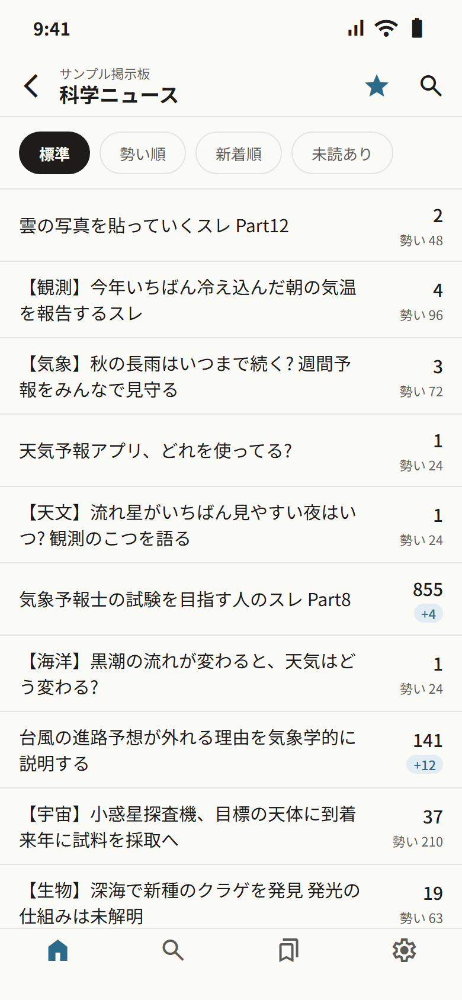
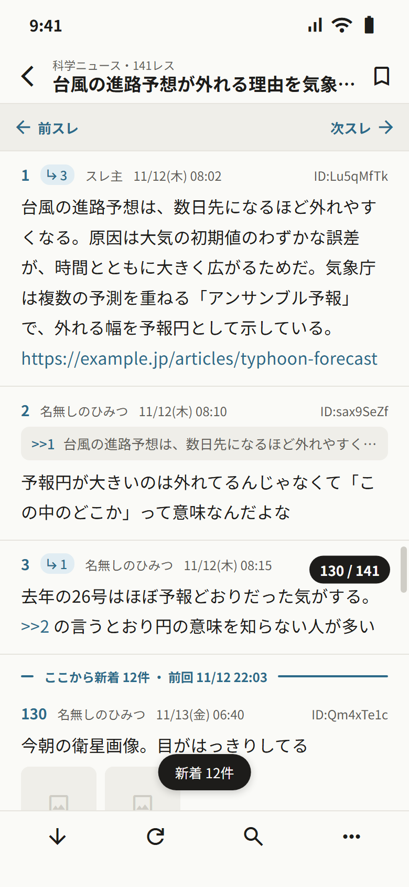
スレは長く、どこまで読んだか分からなくなります。誰が誰に返しているのかを追うのも大変です。
イタメグリは、そうした読みにくさを減らすために作った、読むことに絞ったアプリです。
見たい掲示板のURLか名前を追加すれば、板の一覧、スレの一覧、スレの順に読めます。
スレを開くと、前に読んだところから始まります。新しいレスの前には「ここから新着」の線が入ります。
スレ一覧と履歴には、前に見てから増えた件数が出ます。
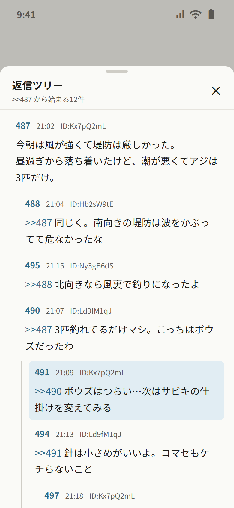
番号の横の「↳3」は、そのレスについた返信の数です。押すと、返信がツリーで開きます。
本文の「>>12」を押せば、元のレスをその場で確かめられます。読んでいる場所からは動きません。
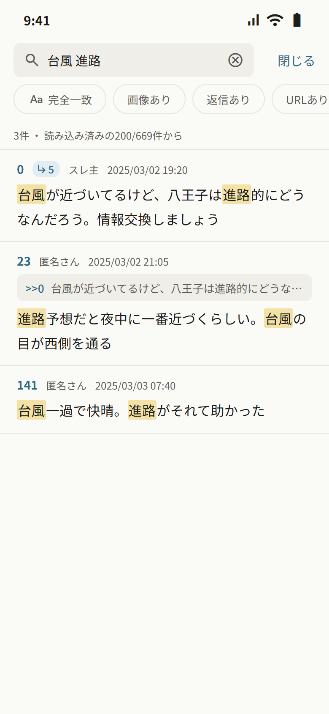
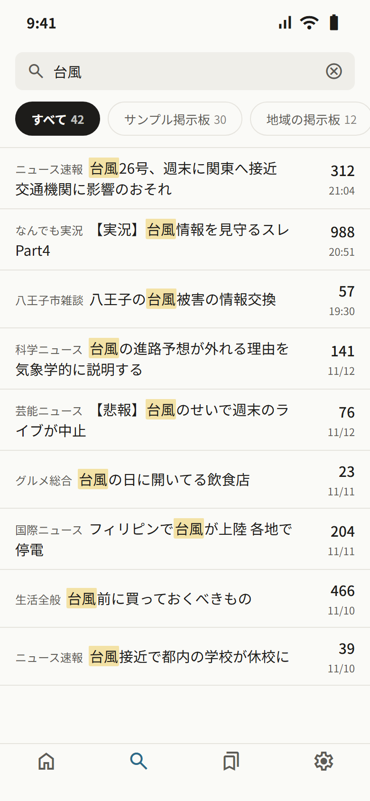
スレの中は、言葉のほか「画像あり」「返信あり」「URLあり」で絞り込めます。結果を押すと、そのレスの位置へ移ります。
追加した掲示板をまとめて検索することもできます。スレのURLを貼れば、そのまま開きます。
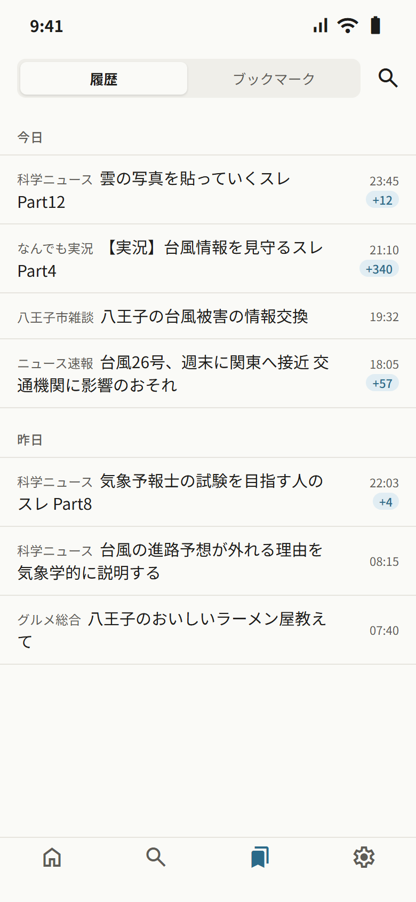
見たスレは日付ごとに残ります。ブックマークしたスレも、新着の件数と一緒に並びます。
履歴を残したくないときは、プライベートモードにできます。
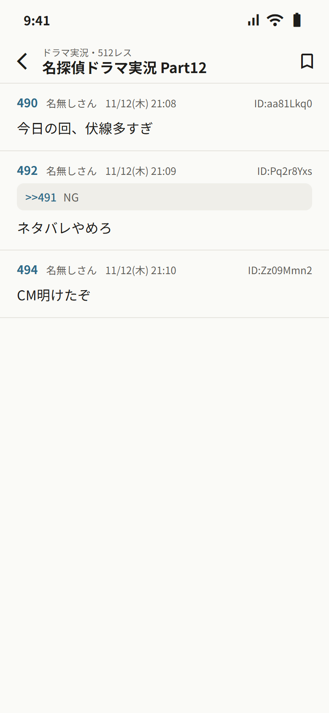
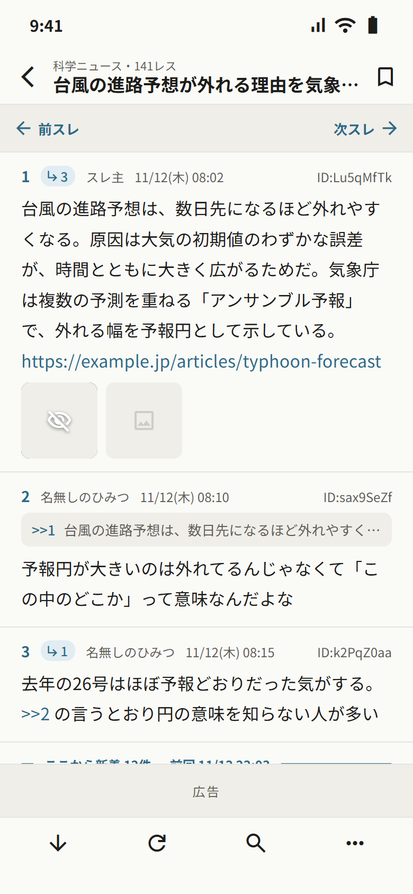
ID、名前、トリップ、言葉、スレのタイトルでNGにできます。言葉とタイトルは正規表現も使えます。
画像は、注意の言葉を含むレスのものだけ、またはすべてをぼかせます。押せば、その画像だけ外れます。
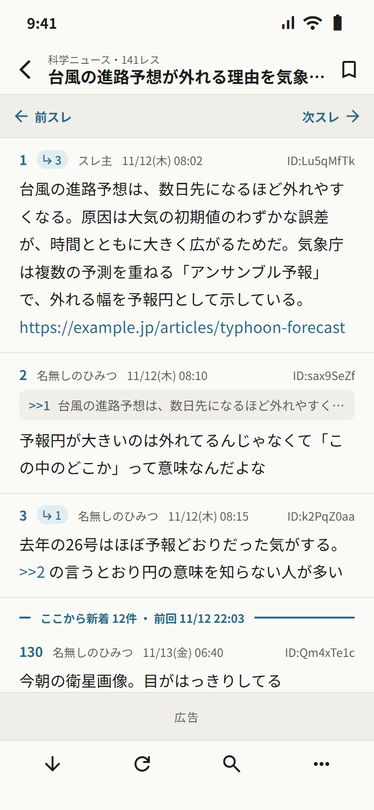
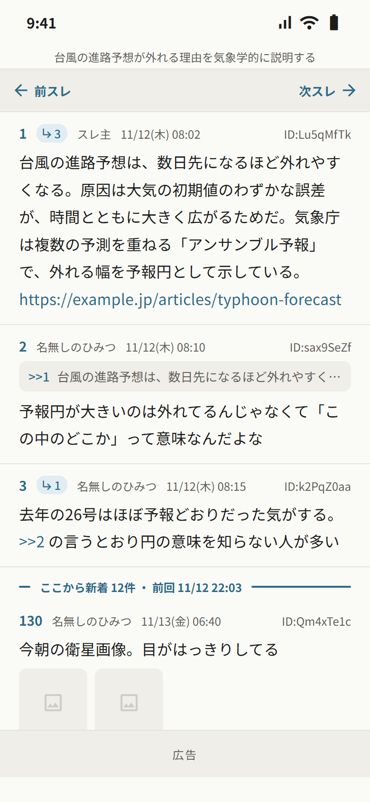
見出しと下の操作が引っ込み、本文が広くなります。上へ戻すか、上の細い帯を押すと戻ります。
「全画面で読む」にすると、時計や電池の表示も消えます。
返信ツリー、同じIDの書き込み、「ここまで読んだことにする」、本文のコピー、NGへの追加。レスを長押しすると、下から出ます。
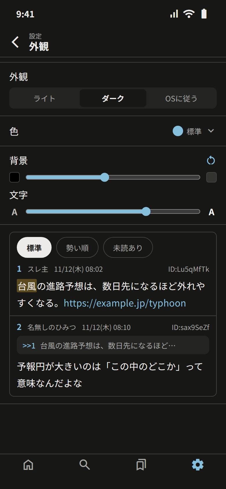
ダークモードでは、背景の暗さと文字の明るさを別々に決められます。強調の色は12の組から選べます。色の見え方が違っても区別しやすい組もあります。
本文の大きさ、行間、名前や日時やIDを出すかも変えられます。
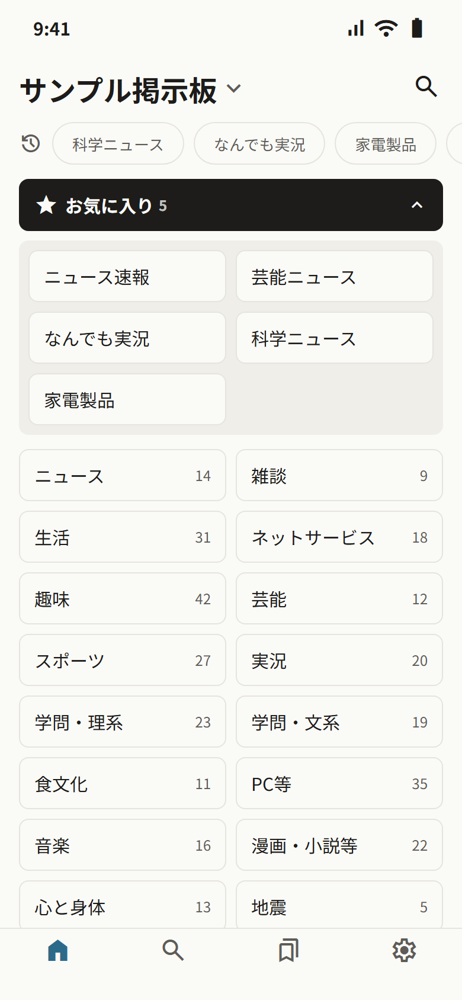
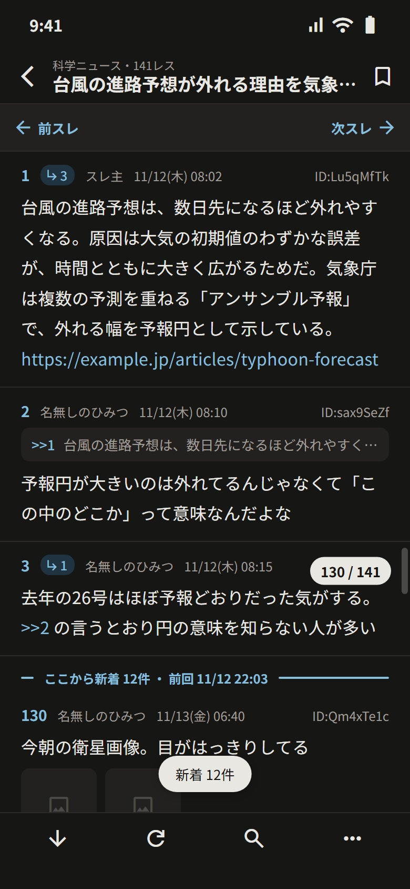
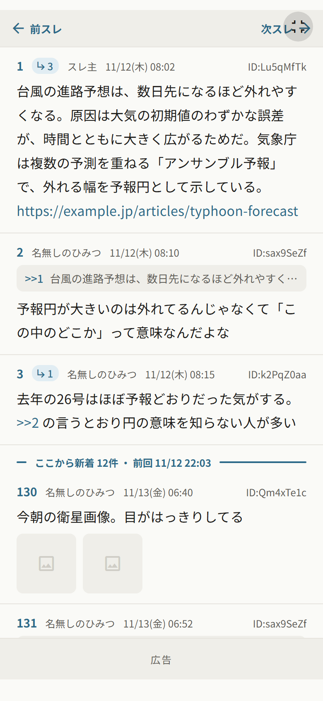
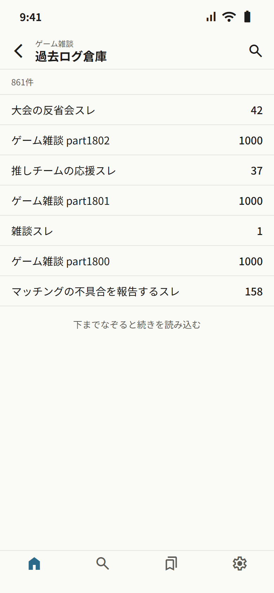
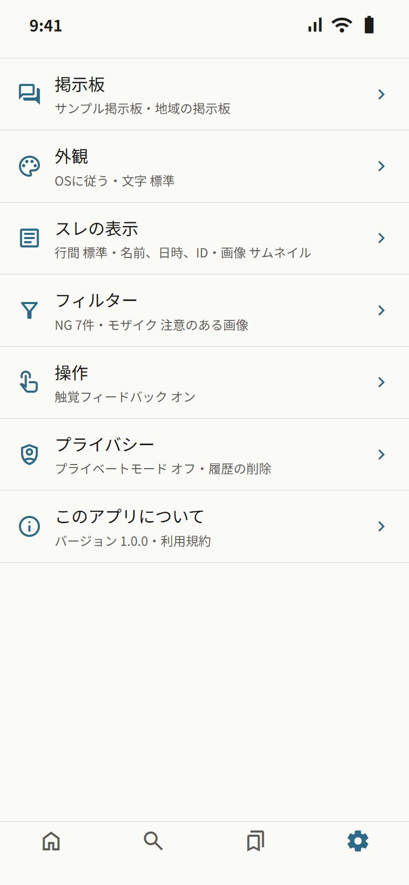
画面は開発中のものです。板やスレの名前、書き込みは架空です。
iPhone向け。無料でダウンロードできます。
App Storeで近日公開